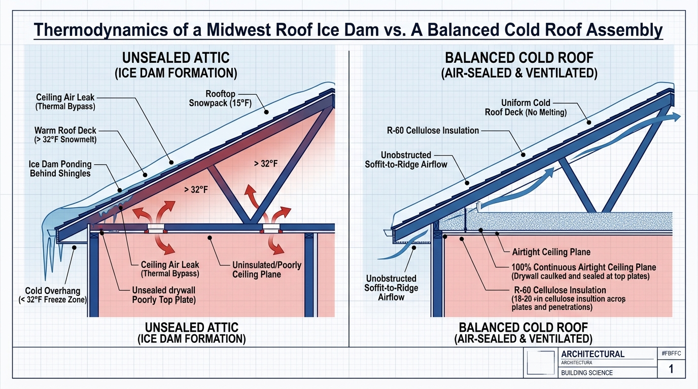

Every January and February across the Upper Midwest, heavy snowfall followed by sub-freezing cold turns eaves into massive ridges of solid ice that back up under shingles and flood interior walls. Hardware stores sell millions of dollars in zigzag electric heat cables, roof rakes, and chemical salt pucks, but building science proves these remedies merely mask symptoms while accelerating shingle wear. Ice dams are not a roofing problem—they are the visible thermodynamic byproduct of attic air leakage and inadequate insulation.
- ✓The 32°F Thermal Split: Escaped indoor heat warms the underside of the roof deck above 32°F, melting bottom snowpack that trickles down until hitting the sub-freezing, unheated eave overhang where it refreezes into an impermeable ice dam.
- ✓Hydrostatic Head Pressure: Trapped meltwater ponds behind the ice ridge, creating standing reservoirs that capillary action and hydrostatic pressure push upward underneath overlapping asphalt shingles into drywall.
- ✓The Heat Cable Trap: Zigzag electric cables draw 5 to 8 watts per linear foot (adding $80 to $150 monthly to electric bills) only to carve narrow 2-inch tunnels that rapidly re-freeze, leaving the root heat leaks untouched.
- ✓The True Envelope Fix: Sealing ceiling-plane thermal bypasses (can lights, top plates, plumbing chases) and installing rigid soffit baffles keeps the entire roof deck below 32°F, permanently stopping ice dams at the physical source.
The Icicle Curtain at 18°F
It is 7:30 AM on a bright January morning in Minneapolis. Outside, the sun reflects brilliantly off a fresh eight-inch blanket of powder, and the red bar stops at a crisp 18°F.
Along the front eaves of a 1978 colonial home, an ominous row of three-foot icicles hangs suspended like a wall of crystal daggers, bowing the aluminum gutters under hundreds of pounds of solid ice. Inside, a faint, rhythmic sound breaks the morning quiet: drip... drip... drip... In the upstairs bedroom, a dark, amber water stain has expanded across the drywall ceiling, and meltwater is slowly leaking around the casing of the north-facing window into a plastic bucket on the carpet.
In a panic, the homeowner drives to the local home center, loading their shopping cart with zigzag electric heating cables, an aluminum telescoping roof rake, and nylon pantyhose stuffed with calcium chloride salt pucks. Within a week, a contractor arrives, proposing an urgent $14,000 mid-winter tear-off to replace the shingles with "heavy-duty architectural asphalt."
Neither purchase solves the problem. A brand-new roof will leak just as quickly as a thirty-year-old roof if the thermal mechanics beneath the plywood decking remain broken. Stopping an ice dam requires looking past the shingles and understanding the thermodynamic laws governing snow, air, and heat transfer.

1. The Thermodynamics of an Ice Dam: The 32°F Melting Plane
An ice dam requires three ingredients to exist: rooftop snow, sub-freezing outdoor ambient temperatures, and an uncontrolled source of heat escaping from the living space into the attic.
Snow is a remarkable thermal insulator, boasting an insulating value of roughly R-1 per inch of depth. When a Midwest winter storm drops eight to twelve inches of fluffy snow across a roof, that snowpack forms an insulating blanket that traps whatever heat rises into the attic space.
The physical cycle unfolds in three sequential stages:
As warm attic air continues to melt rooftop snow hour after hour, this refreezing process repeats millions of times. Within 48 to 72 hours, the thin ice layer grows into an impenetrable solid ice ridge four to twelve inches thick.
2. Hydrostatic Head & Why Overlapping Shingles Leak
Most homeowners assume that an asphalt shingle roof functions like a waterproof rubber membrane. In reality, steep-slope residential roofing is engineered strictly as a water-shedding assembly.
Overlapping shingle courses rely entirely on gravity. As long as water flows downward, each shingle laps over the course below it, directing liquid toward the gutter. Shingles are never designed to resist positive standing water pressure or water flowing backward uphill.
When an ice dam forms along the cold eave, it acts as a frozen dam. Liquid meltwater continuously trickles down from the warm upper roof slope, but its path to the gutter is physically blocked:
[Warm Roof Deck > 32°F] --> Snow Melts Under Blanket
│
▼ (Meltwater trickles down slope)
┌────────────────────────────────────────────────────────┐
│ PONDING WATER RESERVOIR (Trapped Meltwater) │
├────────────────────────────────────────────────────────┤
│ ▲ Water forced uphill under shingle laps via pressure │
└────────────────────────────────────────────────────────┘
│
[Cold Overhang < 32°F] --> SOLID ICE DAM RIDGE (Blocks drainage)As the liquid water backs up behind the dam, it creates a standing reservoir. The depth of that reservoir creates hydrostatic head pressure. Combined with capillary attraction between the flat shingle surfaces, the water forces its way backward and upward, sneaking past the upper edges of the overlapping shingle tabs.
Once water gets beneath the shingles, it encounters standard 15-pound felt or synthetic underlayment. Because this underlayment was nailed down during installation, it contains thousands of fastener penetrations. The ponding water finds these nail holes, saturates the underlying OSB sheathing, rots the rafter tails, and pours downward through the wall plates into bedroom drywall, blown insulation, and interior finishes.
3. Why Heat Cables, Salt Pucks & Shovels Make It Worse
Every winter, hardware stores promote temporary remedies that do far more structural damage than the ice dam itself:
A. Zigzag Electric Heat Cables
Electric de-icing cables installed in a zigzag pattern along the eaves consume between 5 and 8 watts per linear foot. For an average home, running 120 feet of heat cable 24/7 adds $80 to $150 per month to your electric bill. More importantly, building science testing proves they cannot stop ice damming. The cable simply melts a narrow two-inch tunnel through the ice ridge. Meltwater drains through this tunnel until cold wind chills the opening, causing ice to re-form and dam up inside the gutter itself. Furthermore, heat cables bake the asphalt shingles in summer, degrading the protective mineral granules.
B. Calcium Chloride Salt Pucks
Tossing chemical ice-melt pucks or salt-filled pantyhose onto the roof dissolves localized channels in the ice, but the chemical brine damages the roof. The runoff bleaches and discolors asphalt shingles, corrodes aluminum gutters, dissolves galvanized roofing nails, and drips onto foundation landscaping, poisoning shrubs and perennial flowerbeds come spring.
C. Shovels, Hammers, and Ice Picks
Climbing a ladder in freezing weather to hack at solid ice with a roofing shovel or mallet is hazardous to both homeowner and roof. At 15°F, asphalt shingles are brittle as glass. Striking the ice fractures the fiberglass shingle mat, punctures the waterproof underlayment, and creates instant leaks that void the shingle manufacturer's warranty.
4. Code Specifications & Performance Benchmarks
Solving ice dams permanently requires building a balanced cold roof assembly—an attic engineered so the entire roof deck remains uniformly below 32°F during winter weather.
The following table summarizes the verifiable code and building science standards required to eliminate rooftop snowmelt in Climate Zones 5 and 6:
| Building Science Component | Code Reference | Minimum Engineering Specification | Function in Ice Dam Prevention |
|---|---|---|---|
| Ceiling Plane Airtightness | IECC Section R402.4 / ASTM E779 | < 3.0 ACH50 Whole-House (100% Top Plate Seal) | Halts warm convective air bypasses into attic space |
| Attic Insulation Depth | 2024 IECC Climate Zone 5/6 | R-60 Blown Cellulose or Mineral Wool (18–20") | Reduces conductive thermal transfer through drywall |
| Ventilation Intake Baffles | IRC Section R806.2 / R806.3 | Rigid Baffles with Integrated Wind-Wash Dams | Guarantees 2" clear airflow path over exterior wall top plates |
| Net Free Vent Area (NFVA) | IRC Section R806.2 | 1:150 Ratio (or 1:300 with 50% Ridge / 50% Soffit) | Flushes residual solar/conductive heat with outdoor air |
| Self-Adhered Eave Membrane | IRC Section R905.1.2 / ASTM D1970 | Extend 24" Inside Heated Interior Wall Line | Secondary waterproof seal against hydrostatic backups |
Data Sources: International Residential Code (IRC 2021/2024); International Energy Conservation Code (IECC); Building Science Corporation Research Reports.
Notice the critical distinction in IRC Section R905.1.2: self-adhered ice and water shield membrane cannot merely cover the three-foot eave overhang. It must extend a minimum of 24 inches horizontally past the inside face of the exterior heated wall. On a home with two-foot soffits, this mandates a minimum of two full 36-inch courses of membrane (six feet of coverage) to protect against severe hydrostatic ponding.
5. The Three-Step Permanent Solution
A roof will never grow an ice dam if the roof deck stays cold. By eliminating interior heat transfer into the attic and providing sweeping cross-ventilation, snow on the roof remains frozen until ambient outdoor temperatures naturally warm above freezing.
Here is the three-step envelope retrofit that permanently solves ice dams:
Step 1: Seal Every Attic Air Bypass (Stop the Convective Chimney)
Moving existing insulation aside and mechanically air-sealing the ceiling plane stops 90% of attic heat gain:
- Recessed Can Lights: Replace non-IC fixtures with airtight, IC-rated LED wafer lights, or seal over old cans from the attic side using rigid foam boxes caulked to the drywall ceiling.
- Framing Top Plates: Seal the gap between interior drywall and 2x4/2x6 wall framing top plates using one-component polyurethane expanding foam.
- Mechanical Chases & Plumbing Stacks: Seal open dropped soffits, furnace flue chases, and plumbing vent stack penetrations using sheet metal flashing and fire-rated acoustic sealant.
- Attic Access Hatch: Install weatherstripping around the hatch perimeter and glue a minimum of four inches of rigid polyiso foam board (R-26+) to the back of the hatch panel.
Step 2: Install Continuous Ventilation Baffles at Every Eave Bay
Before adding insulation, install rigid PVC or coated cardboard ventilation baffles (such as AccuVent or Durovent) in every single rafter bay along the exterior wall plates. The baffle serves two vital purposes:
Step 3: Blow Uniform R-60 Cellulose or Mineral Wool Insulation
Once the ceiling is airtight and baffles are secured, blow loose-fill cellulose or virgin mineral wool to a uniform depth of 18 to 20 inches (achieving R-60).
Burying the ceiling framing under twenty inches of dense insulation eliminates conductive heat transfer, ensuring that the attic air temperature closely mirrors outdoor ambient conditions. With no escaping indoor heat to warm the plywood sheathing, the snow blanket remains uniform across the entire roof surface, melting evenly only when sunny, warm weather arrives.
Where to Put Your Capital: Emergency Response vs. Permanent Fix
If you are dealing with ice dams right now, determine which operational path matches your immediate situation:
Do not hire a roofer to hack at the ice with axes or hammers. Hire a professional steam-removal service using high-temperature, low-pressure commercial steam equipment (250°F steam at 250 PSI). Steam gently cuts solid ice into manageable blocks without fracturing cold shingles or puncturing the underlayment. Poke a small drainage hole in the sagging ceiling drywall with a screwdriver to release ponding water into a bucket, preventing a catastrophic drywall ceiling collapse.
Skip the quotes for zigzag heat cables and new shingles. Invest that capital into attic air sealing, comprehensive rafter baffling, and blowing cellulose to R-60. A comprehensive attic air-sealing retrofit costs roughly $2,200 to $3,800—one-fourth the price of a mid-winter roof replacement—and permanently solves ice dams while cutting your winter heating bills by 20% to 30%.
Verifiable Standards & Technical Sources
- 2024 International Residential Code (IRC): Section R806 (Roof Ventilation) and Section R905.1.2 (Ice Barriers).
- 2024 International Energy Conservation Code (IECC): Table R402.1.3 (Insulation Requirements for Climate Zones 5, 6, and 7).
- ASTM D1970: Standard Specification for Self-Adhering Polymer Modified Bituminous Sheet Materials Used as Steep Roofing Underlayment for Ice Dam Protection.
- ASTM E779: Standard Test Method for Determining Air Leakage Rate by Fan Depressurization.
Related Building Science Guides
- Winter Utility Tariffs & Stack Dynamics: → Read: Winter Tariff Hikes: Why $20k on Windows Doesn't Hold Up
- Exterior Envelope Thermal Breaks: → Read: Continuous Exterior Insulation: Why R-5 Outboard Beats R-20 Cavity in Freeze-Thaw Climates
- Cavity Insulation Density & Looping: → Read: Does Rockwool Outperform Fiberglass? How Each Holds Up in Midwest Wall Assemblies
- Cold-Climate Heat Pump Mechanics: → Read: Can a Heat Pump Actually Handle -15°F? Cold-Climate Inverters During Midwest Winters
- Cathedral Ceiling Continuous Over-Sheathing: → Read: Adding Continuous Insulation When Replacing Your Roof: Over-Sheathing Cathedral Ceilings